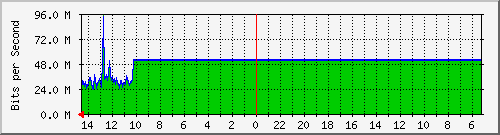

PROXY INTERNET 1 TELMEX 300 MB
| System: | internet1.finanzas.cdmx.gob.mx in Perisur |
| Maintainer: | Arafa |
| Description: | ens192 |
| ifType: | ethernetCsmacd (6) |
| ifName: | ens192 |
| Max Speed: | 536.9 MBytes/s |
| Ip: | 10.1.195.82 (No DNS name) |
Estadísticas actualizadas el Jueves 21 de Julio de 2022 a las 14:35,
'internet1.finanzas.cdmx.gob.mx' ha estado funcionando durante 11 days, 21:56:06.
Gráfico diario (5 minutos : Promedio)

|
Máx |
Promedio |
Actual |
| Entrante: |
94.3 Mb/s (2.2%) |
49.3 Mb/s (1.1%) |
23.6 Mb/s (0.5%) |
| Saliente: |
92.8 Mb/s (2.2%) |
48.5 Mb/s (1.1%) |
23.7 Mb/s (0.6%) |
Gráfico semanal (30 minutos : Promedio)
|
Máx |
Promedio |
Actual |
| Entrante: |
51.9 Mb/s (1.2%) |
51.5 Mb/s (1.2%) |
27.7 Mb/s (0.6%) |
| Saliente: |
50.9 Mb/s (1.2%) |
50.5 Mb/s (1.2%) |
28.0 Mb/s (0.7%) |
Gráfico mensual (2 horas : Promedio)
|
Máx |
Promedio |
Actual |
| Entrante: |
51.9 Mb/s (1.2%) |
51.8 Mb/s (1.2%) |
35.7 Mb/s (0.8%) |
| Saliente: |
50.9 Mb/s (1.2%) |
50.8 Mb/s (1.2%) |
35.5 Mb/s (0.8%) |
Gráfico anual (1 día : Promedio)
|
Máx |
Promedio |
Actual |
| Entrante: |
51.9 Mb/s (1.2%) |
25.9 Mb/s (0.6%) |
51.9 Mb/s (1.2%) |
| Saliente: |
50.9 Mb/s (1.2%) |
25.6 Mb/s (0.6%) |
50.9 Mb/s (1.2%) |
| VERDE ### |
Tráfico entrante en Bits por segundo |
| AZUL ### |
Tráfico saliente en Bits por segundo |